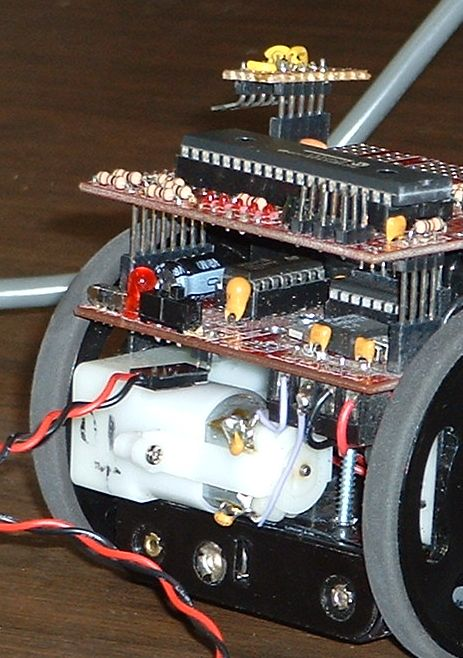
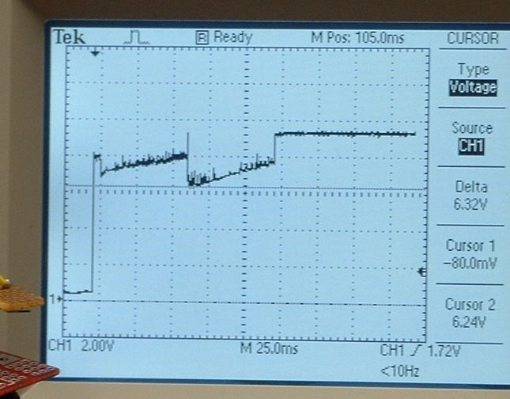
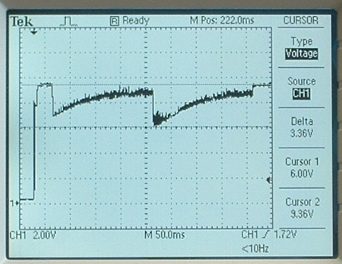
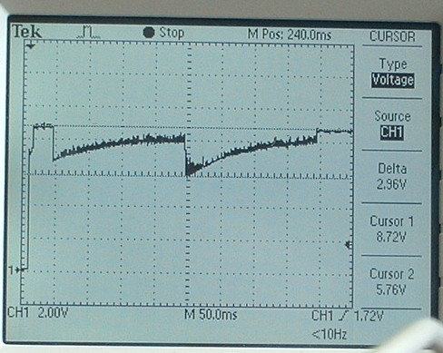
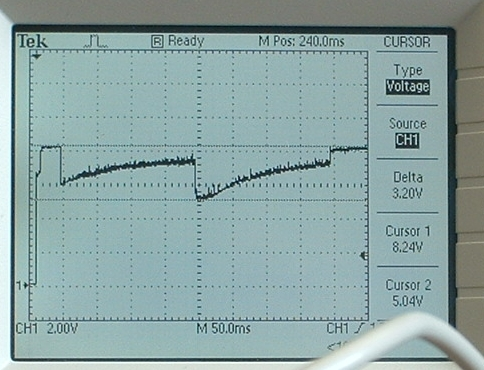
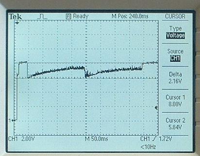
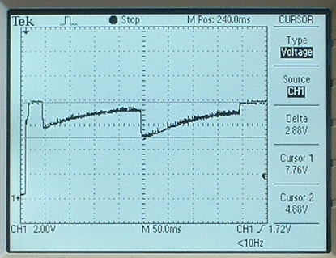

Battery Loaded Motors
by Dan Peirce B.Sc.
This page was reformatted from old notes from 2008.
It appears that if both motors reverse direction when the robot is at
full speed the batteries will be drawn down about three volts from the
on voltage (that is the voltage when the robot is on but the motors are
disabled). This could explain why the robot becomes less reliable when
the battery on voltage is less then about 8.1 volts.
Modified robot 1 with connector at DIAG1
Modified robot 1 with connector at DIAG1 so that battery voltage can be
measured without removing brain board. The battery voltage can be monitored
over a cable

Test Program
A test program was written to spin the robot to the left for 60ms
then to the right for 60 ms and then to stop.

A signal was then captured on a digital storage oscilloscope showing how
the motors loaded the fresh batteries (The battery voltage is about 9.1
volts when the motors are not running and only 6.3 volts when the motors
change direction!
Robot 01 Running Initial Test Program

Test Program Changed
The test program was changed so that:
- after initialization there was a 30 ms delay.
- The robot spins left for 200 ms (enough time for the robot to come
up to speed but not enough for it to move very far).
- The robot spins right for 200 ms. The greatest load on the motor
occurs when both motors reverse direction at the same time.
Items to note
- This is robot01 with batteries fresh out of the box (never used).
- Cursor 2 shows the battery voltage when the motors are not moving at 9.36
(these are fresh batteries). This would correspond to the on
voltage in the table from March 19, 2008.
- Cursor 1 shows the battery voltage at the point in time that the
motors reverse direction (they were drawn down to 6 v).
- When the motors start from rest they were drawn down to about 7
volts. This is consistent from trial to trial when the same batteries are used.
Six fresh AA Alkaline Batteries

These batteries were less fresh

These batteries should probably be replaced

The robot went straight forward, then spun to the right.
Note that only one of the two motors changed direction.

Robot went straight forward and straight back at full speed.
Note the lowest voltage is under 5 volts which could be
problematic but the robot ran OK this time.
